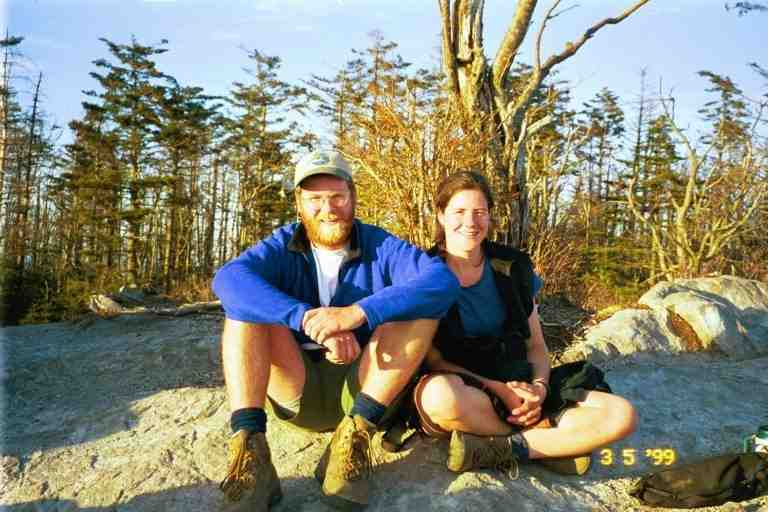
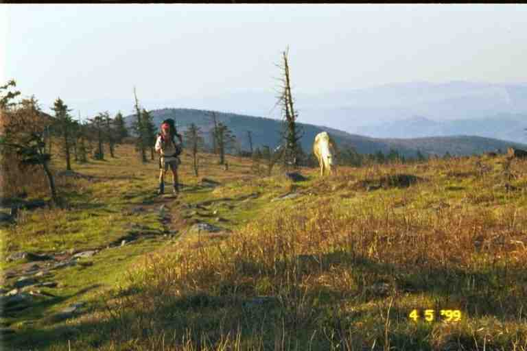
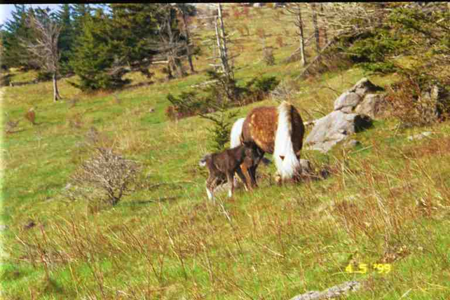
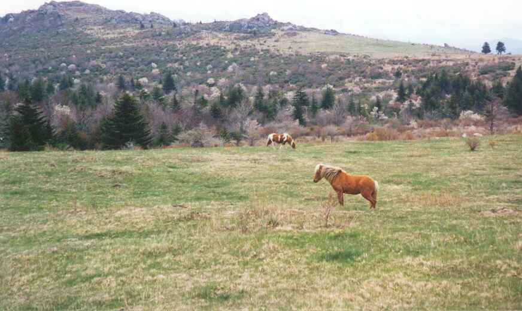
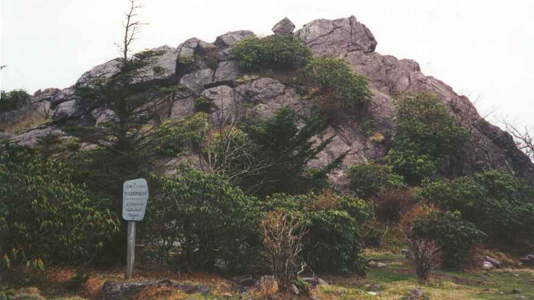

Ponies
We arrived at Thomas Knob shelter May 3rd in the late afternoon. It is situated at the edge of one of the most unique areas through which we would travel. When we look back at our trip, this is one of the areas that we would definitely love to return and hike through.
The last picture mentioned in Chapter 17 shows the view from the large boulders that look out over the rocky meadow behind the shelter. Just below the boulders is a fence that runs for miles and miles to keep in a herd of feral ponies in the federal lands. Another herd roams in Grayson Highlands State Park which is adjacent to these lands, a few hours walk to the south.

In order to obtain water, we had to go through the gate shown, and walk down to a spring that was fenced in to stop the ponies from trampling and contaminating it. The ponies could get water where it ran under the fence.
As soon as we obtained water, we cooked ramen noodles and relaxed at the picnic table in front of the shelter. The trail went right by the front of the shelter so we met a number of hikers. GIT BACK (and her dog CASSIDY) was passing through with two young male hikers we had never met before: LORAX (a Dr Seuss character) and FAST EDDY IN REVERSE who started in February as FAST EDDY. He had got off the trail for a while to reconsider his hike and when he returned to the trail, he extended his name because of his slow pace. CHICKPEA and HONEY DO also came by. HONEY DO wanted to stop for the night but CHICKPEA reminded her that they had a schedule to keep in order to meet her parents in Pearisburg in about 10 days. So they continued on a few more miles.
RAINDANCER, ELF, BAADAI and DREW decided to stay. They continued about 100 yards down the trail to where it went through the fence and then went into the meadow to set up their tents. ELF soon came back because she found few good spots to tent, so she set up back down the trail below the shelter. After setting up, the others soon returned with stories of a group of ponies hanging around their tents and trying to lick the salt off their boots. They would have to store everything inside their tents, or else they would be in danger of losing it during the night.
HOLLY and DOOLEY decided to stay and were going to tent in the meadow below the shelter. It was going to be a clear night with a full moon so they wanted to set up their tent without the fly so that they could look up at the sky. DUKE and BLUET were going to stay with us in the shelter. It was one of the times where roads were too far apart to allow for slackpacking, and they had to sleep on the trail.
We spent a lot of time on the rocks behind the shelter talking with our friends (picture of HOLLY and DOOLEY) and enjoying the view. We brought our stove back here and cooked supper. All in all it was a wonderful relaxing evening, with the views, the camaraderie and the fresh air. That night, I woke up and noticed how bright it was out. I went out back to the rocks, sat down and enjoyed the view in the moonlight.

The next morning, we proceeded along the trail and went through the fence by way of a narrow zigzag entrance placed so as not to be accessible by the ponies but just wide enough for us to get through, walking sideways. At first the terrain was relatively flat as we wandered easterly in and out of small woods and through fields strewn with volcanic rock. We walked by a number of ponies who seemed oblivious to us. The trail turned south and we caught a glimpse of GIT BACK some distance off the trail apparently walking to obtain water.
We came to a hill which actually consisted of a large pile of boulders. Naturally the trail went up it, wandering around and over boulders as it climbed. Near the top I started around a large boulder when we were surprised by DOOLEY who told us that the trail did not go that way. The trail went in the other direction through a narrow gap called Fatman's Squeeze between enormous boulders . On the other side we came out overlooking a valley with gently rolling hills littered with rocks and stunted vegetation. There were pockets of trees in what seemed to be deep valleys. The slope on this side of the hill was a steep field of large rocks and so there was no actual trail. We proceeded along the edge of the hill, hopping from rock to rock following the blazes painted here and there until they headed down to the valley. We then headed into a little woods and crossed a fence into Grayson Highlands State Park. The fence keeps the two herds of wild ponies separate.
We came upon many small groups of ponies. They were not disturbed by our presence and we could have petted them as some hikers later told us they did. (picture of PA and pony) Some hikers were licked by ponies trying to get salt. There were a number of pregnant mares and quite a few foals. One foal in particular caught our attention as it wobbled on its spindly legs trying to get a meal from its mother. We speculated that it was a new born. (see picture). The ponies were covered in thick fur and had long unkempt manes and tails. (See picture from SINGLEMALT.) They came in every conceivable horse colour: black, brown, gray, pinto, etc.



For the rest of the morning, the trail gently rose and dropped. The territory reminded us of scenes of barren landscapes out west. (See picture from SINGLEMALT.). We were in open country with some wooded areas off to our left and below us in what seemed to be ravines carved by streams. We saw an occasional white tail deer come out of the bushes and bound across the trail and into the hills on our right. Far off to our left was a ridge of low rocky hills, an extension of the hills we had descended earlier. The air was fresh and warm, the footing was good and the climbs were gentle. What a wonderful morning walk.

A little after noon we took a lunch break at Wise shelter situated in a wooded oasis on the trail. RAINDANCER and ELF were here but soon left. They were almost giddy with excitement from the morning's hike. BLUET and DUKE arrived and had lunch with us. Bluet told of a foal who walked up to her and allowed her to scratch its neck. All of a sudden we were startled by loud noise in the underbrush. It turned out to be a rufus-sided towhee kicking up the leaf litter, looking for a meal. It made quite a racket. (Bird identification courtesy of BLUET - http://trailplace.com/c99journals/319jackson/319jackson_index.html.)
After lunch the trail went down into a wooded gully, crossed a stream and then went over a fence back out of the state park into the federal lands (Washington-Jefferson National Forest, I believe). I noticed that the fence in this spot had been cut. We soon came out of the woods into mountain meadows with long grass and many large rocks. It was warm walking under the afternoon sun in this exposed area. This was Stone Mountain.
We gradually started descending and came to a large corral in a place called The Scales. We crossed through the corral and we could see cattle on the other side of the fence. We went through the fence and headed towards Pine Mountain, avoiding cow patties as we went. As we followed the narrow path up the forested mountain, we came upon RAINDANCER and ELF taking a break. We said we were getting tired but RAINDANCER said she wasn't. ELF later confided that RAINDANCER was tired but did not want to admit it. I guess some still retain some foolish pride on the trail.
We met a ranger whose job includes hiking through this area; lucky man. He told us about the ponies. There are 5 such herds on the east coast of the US including one on an island off the shore of South Carolina. The number of horses in each herd is controlled by a roundup every year in which the extras are sold to people who will take care of them. The herd on the federal land here is usually restricted to 11 stallions and 55 mares. In order to ensure their survival, the herds are kept separate. Every five years or so, a few stallions are exchanged between herds. I mentioned the cut in the fence and he said he was constantly repairing the fence in that spot. There are trails for horse riders through the area and a few of them take a shortcut through that spot rather than follow their trail to the proper entrance.
The ranger said the next shelter was not very far through the woods down the other side of the mountain but it seemed to take forever to get there. We finally got to Old Orchard shelter late in the afternoon. This had been a 10 mile day, not a big day by any means but I agreed with RAINDANCER that this was one area we could have really slowed down in and taken an extra day to enjoy.
There were a dozen or so young college age students camped here in the large circular clearing in front of the shelter. They were section hiking southbound and this event was part of a program they were taking. They operated as a co-operative group, each with his or her own tasks. RAINDANCER and ELF set up their tents in the woods, leaving the shelter to MA and I.
There was a man here hiking south who was using the same brand of tent as RAINDANCER, a custom-made Stephenson. His tent was a large three man tent weighing less than 5 pounds. The tent was single walled (as compared to most tents which had a separate fly over them) made of a parachute material which was reflective and actually kept heat inside. Stephenson tents are very expensive ($700 or more for a two-person), extremely light and are custom made with the features each person requests. They can only be obtained from the manufacturer, a family operation. Many people order them through their website. A visit to the website reveals all the tents set up and also reveals a lot about the manufacturers who pose naked next to their creations. (www.warmlite.com)
The next day the trail was rocky with a number of streams to cross. It turned cloudy and there were a few rain showers during the day. At the 8 mile mark we came to a side trail leading half a mile to the USFS Hurricane Campground with hot showers. We met FREE SPIRIT at the fork who told us that ELF had gone down for a shower. We decided that we did not need the extra mileage. We hiked on with FREE SPIRIT, an extremely fit young woman in her mid thirties. She is a hairdresser from New Jersey who travels to her clients' homes to do their hair.
For a good part of the day, the trail hugged the side of a wooded hill. At a spot where the trail comes to a 90 degree corner, Comers Creek tumbles down a steep rock fall and crosses the trail. We sat and had a break with DUKE and BLUET among the boulders above the trail next to the waterfall. This was approximately the 500 mile mark.
Later we came to the road which leads to Troutdale 4 miles away but we continued on. Apparently the hamburgers in this little town were great as per RAINDANCER and as per a note in a register from NOTIME who said that QUIK had gone to town and brought her back a burger and fries. We came to Raccoon Branch Shelter which was 0.2 miles down below the trail in a wooded ravine. After a short break we decided to continue for 2.5 miles to Trimpi Shelter.
Trimpi shelter is different than the typical shelter. It is one of the few with the front partially closed in. There is a wide doorway in the front with an earth floor passage down the center. A fireplace is situated on the back wall. The sleeping platforms are on both sides of the passage providing more protection from the elements than the standard design. This one also had a one-person sleeping ledge above each platform. GIT BACK, LORAX and FAST EDDY were staying in the shelter as were two brothers in their forties who were section hiking.
We tented in a narrow flat clearing about 20 feet down a side trail beyond and below the front of the shelter. Tenters included RAINDANCER, ELF, FREE SPIRIT, a young girl called PEACHBUZZ, and another young female thru hiker. RAINDANCER was located a little further down the trail than the rest and had to control traffic walking down that way to use the toilet area. She had set up close to an overhanging branch. She banged her head so hard on it that she fell on her tent and snapped one of the poles. She had a massive egg on her head and had us worried for a while. Because her tent was a Stephenson, she would have to get a replacement pole directly from the manufacturer. She was later able to call and received it within a few days.
I was told to watch out for poison ivy at the water source and on the way to it. FAST EDDY came with me to point it out. When I was a kid, I had poison ivy 9 years in a row and I still could not identify it (and I still can't).
It rained a little during the night, so our tent was wet when we packed it in the morning. It was warm as we hiked over easy mountain terrain that morning. We met a young female hiker coming towards us followed closely by another young lady who looked familiar. I guess she wanted to make sure there was no mistaking who she was, because she introduced herself as DREW's GOLDILOCKS. In order to test the recovery of her feet, she had obtained a ride to Atkins from hiker trash and was now hiking back to Damascus.
The trail widened and we arrived at the new Partnership shelter by noon, a distance of 10 miles. This large two storey shelter is situated on the property of the Headquarters of the Mount Rogers National Recreation Area, just behind the storage and maintenance yard. It has a shower and it is a 3 minute walk to the headquarters building with washrooms, a pop machine and a phone. It is a common practice of hikers staying here to call and have pizza delivered from the town of Marion. We were not staying but we took a long break for a shower and pop. I started my shower wearing my shirt and shorts, hoping that it would clean and refresh them. We took the occasion to lay out our tent and wet equipment to dry in the sun.
The trail register had a large note from CHICKPEA attached to the outside cover. It said that the previous night, a drunk dayhiker staying on the top floor had peed in a corner and that it had dripped down on the trail register. This was one register we would not be reading. More about registers at the end of this segment.
Before we left, we met PATCHES who was so named because of the many patches on his pack. MA asked him about a Canadian patch and he told us about his Canadian girl friend who lived on Salt Spring Island off the coast of British Columbia. He intended on moving there after his hike.
We started out after our break not sure if we would stop at Chatfield shelter 7 miles away or try for the Village Motel at Atkins which was RAINDANCER and ELF's destination, 11.5 miles away. We stopped at a spigot in the parking lot to fill our half litre bottles before leaving but did not bother filling the water bags. We crossed VA 16 and began the gradual climb up Brushy mountain, then walked the ridgeline.
We soon found that our water bags were empty and we were far from our destination. It would have been so easy to fill our bags directly from the spigot. There was some Gatorade left in our bottles and we decided to ration it. We did not think there would be a problem as the Data book shows water at the camping area at USFS 86, just 2 miles away. We proceeded down into a gap and then climbed steep Locust mountain which included scrambling straight up sections of loose fallen rocks and gravel. This side of the mountain faced south and had very little cover from the sun. We came down the other side in a lightly wooded area and arrived at USFS 86. There was a parking area here and some fire rings and blue blazes which should have lead us to water but we could not locate any. This was a very open area with no shade so we quickly decided to go on. The shelter was another 3 miles away.
We immediately started climbing Glade mountain which fortunately was not too steep and included switchbacks. However, there were few trees, and the trail was exposed to the sun as it hugged the side of the mountain, slowly going up. We had sips of liquid once in a while, and were feeling hot and dry. We were not really worried about the situation, just uncomfortable. We finally got to the top and walked the grassy ridgeline which finally became more wooded and then started down the other side of the mountain. We were now in the shade and were becoming anxious to find water. Finally we heard the sound of running water and came to a little stream crossing the trail. We stopped for a break, filtered water and had our fill.
About 5 minutes after getting back on the trail we arrived in a valley with a stream running through it. The shelter was situated here overlooking the stream. It was built on a boulder, with its back against a steep mountainside. We were tired and decided not to go any further, as it was now past six o'clock. This was another shelter that was high off the ground and we had to get in by climbing on large rocks placed in front. The outhouse was located higher up the side of the mountain. It was accessible by a 20 foot steep trail next to the shelter. This was likely the best placement so that it would not contaminate the stream in this narrow valley. MA set up our sleeping area and I went down to the stream to soak my feet.
We were soon joined by PATCHES who warned me that placing my feet in such cold water could cause problems with circulation because of the effect on the capillaries. It seems there was some nursing among the many varied things in his background. He had served as a nurse in Saudi Arabia for some time.
We had an interesting conversation with PATCHES as we prepared our suppers. He was a very interesting friendly person who had lived (or perhaps served) all over the world. His demeanour was very calm and confident. When he expressed an opinion it was more like he was stating a fact, and a person would see no need to question it.
He cooked his meal on a noisy small brass Svea stove. He obviously took good care of it as it literally sparkled. We owned the exact same stove but had not brought it because it is very noisy, in fact we often felt it could be heard for miles. Also while it boils water much quicker than our Whisperlite, it is hard to adjust to have it simmer. PATCHES quickly had his supper ready and eaten while I was still fiddling with my stove. He then lit a cigarette and relaxed.
We were soon joined by BAADAI and GRUFF (named for Billy Goat Gruff - A Brothers Grimm story I believe). We had not seen GRUFF since Plum Orchard shelter just after Hiawassee on March 22nd. We had passed him because he had taken time off to attend a bluegrass festival with BLUEGRASS, NATTY, and POCO.
We were up early the next morning and by 7:15 we were on our way to Atkins 4.5 miles away, where we intended on getting a room at the Village Motel. The first part of our hike was along the stream on a gravel and pebble path, crossing branches of the stream on a number of occasions. We eventually found ourselves going through woods and fields of tall grass which were formerly farm land. Everything was lush and green and damp from the morning dew. We came to a country museum which consisted in a few small buildings and a restored one-room school house. It was still very early but the school house was not locked so we went to have a look.
We knew we were getting close to our destination when we began to hear highway sounds far below and to our left. We were soon passed by PATCHES who was interested in having breakfast at the motel's restaurant after I had described what I had heard about it. At one point, we thought that we were walking through an old homestead even though we saw no traces of buildings. We went past a number of tall thick cedars. They were at least 15 feet tall and were so perfectly shaped that they resembled ornamental trees that are being trimmed.
We were keeping PATCHES in view until we came to a stile crossing a fence. He went over the stile and then crossed a railroad track just before a train came by. We had to wait at least 5 minutes for the train to pass. Finally we found ourselves on a hill overlooking The Village Motel and Restaurant and the adjoining truck stop and it was only 9 a.m.
****************
The next segment covers our adventures in Atkins Virginia, God's Thumbprint and Bland, Virginia.
********************
Trail Registers
In every shelter there is a trail register or trail log. Registers can sometimes be found (although only rarely) at other spots, such as campsites or even placed in rural mailboxes deep in the woods or on mountain tops. There is a trail register in a metal drawer that has been inserted in the base of the rock on Springer Mountain which marks the beginning of the trail. At shelters, the register is kept in a plastic storage bag which also contains pens and pencils. It can usually be found on the floor at the back of the shelter, on a shelf or ledge or tucked in a rack placed there for that purpose.
Registers are one of the main methods of communication between hikers. Almost everyone reads the register upon arriving at the shelter or during the evening. It was also common to take a break during the day at a shelter and to read the register.
People write stories of their day's adventure or get philosophical about their experiences. They leave messages for friends who are coming behind or give information about the shelter, the location of water source, the mice, etc. Some leave simple messages announcing the time of their arrival and whether they were stopping or passing through. EAGLE would often write "the EAGLE has flown by" or "the EAGLE has landed", depending on whether he was passing through or stopping for the night. I remember entries during the summer from old friends ahead of us which said simply "MA and PA where are you?"
A very simple example of use of the register is an entry by SONGBIRD in a shelter a day or two before Atkins. It informed us that the TVP from her mother was waiting for us at the motel in Atkins.
By reading the register, hikers can get trail news about problems people are having, injuries, and who is leaving the trail. We can get news about people who have passed us and people we are catching up to. We often know a person before we actually meet them. There is a sharing of information about towns stops, re-supply, restaurants, etc. In the early spring we could read entries by those who went through in winter and be glad we were not in their situation.
People write about their physical pain, their morale and how much they miss their families. They are often very open in sharing their emotions. There is some poetry and a little artwork, such as the daily drawings by JILEBI. In a few registers there were parodies of well known songs describing life on the trail or some comical event. Many of the entries were of very high quality but they were only intended for the limited hiker community in the year they were written and will be lost forever. Everyone was particularly impressed by a number of very literary entries in the summer by a thru hiker named ABNER SERD (meaning absurd) who we actually never met. They were a humorous look at life on the trail and at the idiosyncrasies in certain trail towns. A dissertation on delis in New York state was particularly funny. I have always wished I had copied it.
The register is usually a school notebook with thick black cardboard covers or a spiral bound school notebook. It is usually placed there before the beginning of thru hiking season or by whoever comes by with a new one when the old one is full. The person who places it usually writes their name and address on the inside front cover and asks that it be mailed to them when full. They promise all kinds of rewards for doing so. In a few rare situations, the register is placed by the local trail maintaining club who collect them when full.
there are photocopies of a few old registers at PT's website, www.hikertrash.com